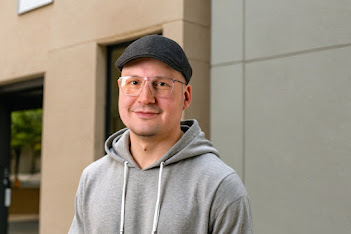

Brücke zwischen Kommunikation und Technologie — Strategie, KI und pragmatisches Machen.
Niklas Fauteck kennt die Stelle, die die meisten Unternehmen fürchten: zwischen Fachabteilung und IT. Als Head of Digital Transformation Kommunikation bei RTL Deutschland hat er gebaut, automatisiert und erklärt — bis aus Ideen Systeme wurden.
Heute bringt er dieses Wissen zu Organisationen und Menschen, die digitale Transformation nicht verwalten, sondern gestalten wollen. Und er zeigt, wie sich mit KI als Co-Pilot eigene Tools bauen lassen — ganz ohne klassischen Entwickler-Hintergrund. Das nennt sich Vibecoding. Und es verändert, was möglich ist.
Abseits des Schreibtischs baut Niklas Smart-Home-Systeme, experimentiert mit 3D-Druckern und hat viele Jahre Science Slams moderiert. Die Überzeugung dahinter: Dinge einfach anfangen, scheitern, besser machen. Dieselbe Mentalität steckt in jedem Projekt, das er anfasst.
Worüber wir uns unterhalten könnten...